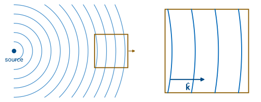
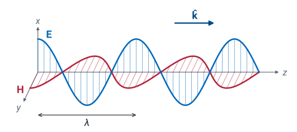
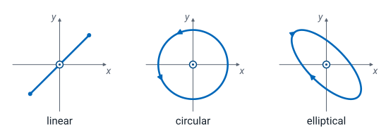
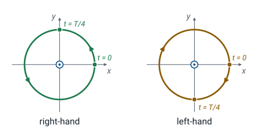
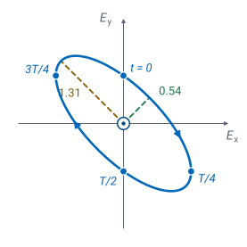

L37 - Uniform Plane Waves and Polarization#
Uniform Plane Waves and Polarization
Today we find the fields of a uniform plane wave and the path its electric field traces.
Lesson 37 · Module 4: Dynamic Fields · Maj Ellis · Dr. Neil Rogers
Learning Objectives
- I can articulate what a Uniform Plane Wave (UPW) is and describe key properties that relate the electric and magnetic field.
- I can calculate the electric and magnetic fields for a UPW.
- I can articulate the concept of polarization and determine the polarization for various UPWs.
Lessons 35 and 36 reduced Maxwell’s equations in a source-free region to the wave equation for the electric field and solved it. Today we take the simplest solution, the uniform plane wave, and work out everything about it: which way its fields point, how the magnetic field follows from the electric field, and the ratio of their magnitudes, the intrinsic impedance \(\eta\). The second half of the lesson follows the tip of the electric field vector through one period at a fixed point. The path it traces, a line, a circle, or an ellipse, is the wave’s polarization, and an antenna receives a wave well only when its own polarization matches.
Where We Were
Lesson 35, a lossless, source-free region:
Lesson 35 wrote Faraday’s law and the Ampere–Maxwell law in phasor form for a region with no charge, no current, and no loss, and combined them into the vector wave equation, the Helmholtz equation for \(\widetilde{\mathbf{E}}\). The same steps give the same equation for \(\widetilde{\mathbf{H}}\). Lesson 36 solved it and extended the solution to a lossy medium, where \(j\beta\) becomes \(\gamma = \alpha + j\beta\) and the wave decays. Today we stay in a lossless medium, with real \(\mu\) and \(\epsilon\), and the phasor convention of Lesson 2: a field \(\mathbf{E}(t) = \text{Re}\left[\widetilde{\mathbf{E}}\ e^{j\omega t}\right]\).
Plane Wavefronts

Far from any source, a small patch of the wavefront is nearly flat.
A plane wave has flat wavefronts; a uniform one has the same field everywhere on each front.
A wavefront is a surface on which the field has the same phase. A small source radiates spherical wavefronts, and a long line source radiates cylindrical ones. Far from the source, the radius of a spherical front is so large that over the region we care about, the size of an antenna or a window, the front is nearly flat, as the enlarged square in the figure shows. A wave with flat fronts is a plane wave. If, in addition, the magnitude and phase of the field are the same at every point of each front, the wave is a uniform plane wave. The direction of travel, the unit vector \(\hat{\mathbf{k}}\), is perpendicular to the fronts. A real wave is never exactly uniform, but the uniform plane wave describes the field near any receiver that is many wavelengths from the transmitter, and it is the wave Lessons 38 through 40 send into a boundary.
The Uniform Plane Wave
Wave along \(z\): nothing varies with \(x\) or \(y\).
We point \(z\) along the direction of travel, so the wavefronts are planes of constant \(z\) and every derivative with respect to \(x\) or \(y\) is zero. The \(z\) component of the Ampere–Maxwell law contains only \(x\) and \(y\) derivatives of \(\widetilde{\mathbf{H}}\), so its left side vanishes and \(\widetilde{E}_z = 0\). The \(z\) component of Faraday’s law gives \(\widetilde{H}_z = 0\) in the same way. Both fields lie in the plane of the wavefront: a uniform plane wave is transverse. What remains is the one-dimensional problem Lesson 36 solved,
a forward and a backward wave with \(v_p = \omega/\beta = 1/\sqrt{\mu\epsilon}\) and \(\lambda = 2\pi/\beta\). Today we keep both waves and find the magnetic field that goes with each.
The Magnetic Field from Faraday’s Law
\(\widetilde{\mathbf{E}} = \hat{\mathbf{x}}\ \widetilde{E}_x(z)\):
We take the electric field along \(\hat{\mathbf{x}}\); a \(\hat{\mathbf{y}}\) component behaves the same way and adds by superposition. The curl in rectangular coordinates (Lesson 17) is
With only \(\widetilde{E}_x\), and no variation with \(x\) or \(y\), only the \(\hat{\mathbf{y}}\) term survives. Differentiating the two waves brings down \(-j\beta\) and \(+j\beta\), and dividing Faraday’s law by \(-j\omega\mu\) gives the magnetic field. It points along \(\hat{\mathbf{y}}\), perpendicular to both \(\widetilde{\mathbf{E}}\) and the direction of travel, and the backward wave enters with a minus sign, as the backward current did on the line in Lesson 5.
Intrinsic Impedance
The ratio of the electric to the magnetic field in the forward wave is the intrinsic impedance of the medium, in ohms. This derives the wave impedance Lesson 6 quoted and Lesson 30 used. It plays the role \(Z_0\) plays on a line: the magnetic field and the line current
match term for term, the second from Lesson 5. In free space \(\eta_0 = 376.7\ \Omega\), often rounded to \(377\ \Omega\) or written \(120\pi\ \Omega\). In polyethylene, with \(\epsilon_r = 2.25\), \(\eta = 251\ \Omega\), the \(\eta\) in Lesson 30’s \(Z_0 = (\eta/2\pi)\ln(b/a)\) for RG-58.
In a lossy medium the same steps run with \(e^{-\gamma z}\) in place of \(e^{-j\beta z}\). The derivative brings down \(-\gamma\), Faraday’s law gives \(\widetilde{H}_y = \gamma E_0^+ e^{-\gamma z}/(j\omega\mu)\), and with Lesson 36’s \(\gamma^2 = j\omega\mu(\sigma + j\omega\epsilon)\),
which is complex: the magnetic field lags the electric field. With \(\sigma = 0\) it reduces to \(\sqrt{\mu/\epsilon}\).
E, H, and the Direction of Travel

The forward wave has \(\widetilde{\mathbf{E}}\) along \(\hat{\mathbf{x}}\), \(\widetilde{\mathbf{H}}\) along \(\hat{\mathbf{y}}\), and \(\hat{\mathbf{k}} = \hat{\mathbf{z}}\), and \(\hat{\mathbf{z}}\times\hat{\mathbf{x}} = \hat{\mathbf{y}}\), so \(\widetilde{\mathbf{H}} = (1/\eta)\ \hat{\mathbf{k}}\times\widetilde{\mathbf{E}}\). The backward wave checks the rule: with \(\hat{\mathbf{k}} = -\hat{\mathbf{z}}\), \((1/\eta)(-\hat{\mathbf{z}}\times\hat{\mathbf{x}})\ E_0^- = -\hat{\mathbf{y}}\ E_0^-/\eta\), the minus sign of the previous frame. The rule holds for any direction of travel, because we could have chosen any axis as \(z\). Crossing both sides with \(\hat{\mathbf{k}}\) and using the identity
with \(\hat{\mathbf{k}}\cdot\widetilde{\mathbf{E}} = 0\) for a transverse wave, gives the second form. Three facts follow: \(\mathbf{E}\), \(\mathbf{H}\), and \(\hat{\mathbf{k}}\) are mutually perpendicular; \(\mathbf{E}\times\mathbf{H}\) points along \(\hat{\mathbf{k}}\); and in a lossless medium \(\mathbf{E}\) and \(\mathbf{H}\) are in phase, so they reach their peaks at the same points, as the figure shows. Lesson 38 derives \(\mathbf{E}\times\mathbf{H}\) as the power per unit area the wave carries.
Worked Example: A Wave in Polyethylene
\(\mathbf{E} = \hat{\mathbf{x}}\ 10\cos\left(2\pi\times10^9\ t - \beta z\right)\) V/m, \(\epsilon_r = 2.25\):
Worked example — the fields of a 1 GHz wave in polyethylene
A 1 GHz uniform plane wave travels along \(+z\) in polyethylene, the dielectric of RG-58, with \(\epsilon_r = 2.25\) and \(\mu = \mu_0\). Its electric field is \(\mathbf{E} = \hat{\mathbf{x}}\ 10\cos(2\pi\times10^9\ t - \beta z)\) V/m. The phase constant is
so \(\lambda = 2\pi/\beta = 0.200\) m and \(v_p = \omega/\beta = 2.00\times10^8\) m/s, two-thirds of the free-space values. The intrinsic impedance is \(\eta = 376.7/1.5 = 251\ \Omega\). With \(\hat{\mathbf{k}} = \hat{\mathbf{z}}\), the magnetic field is \((1/\eta)\ \hat{\mathbf{z}}\times\hat{\mathbf{x}}\ 10 = \hat{\mathbf{y}}\ 10/251\), so
in milliamperes per meter.
The magnetic field is small in amperes per meter because \(\eta\) is large: a 10 V/m field, which is strong for a received signal, comes with only 40 mA/m.
Worked Example: A Wave Traveling Along −z
\(\mathbf{E} = \hat{\mathbf{y}}\ 5\cos\left(6\pi\times10^8\ t + \beta z\right)\) V/m in free space:
Worked example — the magnetic field of a backward wave
The phase \(\omega t + \beta z\) stays constant when \(z\) decreases as \(t\) increases, so this 300 MHz wave travels along \(-z\) and \(\hat{\mathbf{k}} = -\hat{\mathbf{z}}\). In free space \(\beta = \omega/c = 6.28\) rad/m and \(\lambda = 1.00\) m. The cross product is \(-\hat{\mathbf{z}}\times\hat{\mathbf{y}} = \hat{\mathbf{x}}\), and \(5/376.7 = 13.3\) mA/m, so
in milliamperes per meter.
As a check, \(\mathbf{E}\times\mathbf{H}\) points along \(\hat{\mathbf{y}}\times\hat{\mathbf{x}} = -\hat{\mathbf{z}}\), the direction of travel. Taking \(\mathbf{H}\) along \(-\hat{\mathbf{x}}\), the answer for a wave along \(+z\), is the most common error in this kind of problem.
Polarization
A wave along \(+z\), with \(E_{x0}, E_{y0} \ge 0\) and \(\Delta\phi = \phi_y - \phi_x\):
A uniform plane wave along \(+z\) can have both an \(x\) and a \(y\) component, each with its own amplitude and phase. Only the difference of the two phases matters, because a common phase only shifts the origin of time, so we factor out the phase \(\phi_x\) of the \(x\) component and keep the phase difference \(\Delta\phi = \phi_y - \phi_x\). We write it \(\Delta\phi\) because Lesson 36 used \(\delta\) for the skin depth. The polarization of the wave is the path the tip of \(\mathbf{E}\) traces at one fixed point as time passes, viewed in the plane of the wavefront. Every point on the \(z\) axis traces the same path, shifted in time, so we watch the plane \(z = 0\).
Polarization matters in practice because a receiving antenna responds only to the part of the incoming field that matches its own polarization. If \(\hat{\mathbf{e}}_w\) is the unit polarization vector of the wave, the phasor \(\widetilde{\mathbf{E}}\) divided by its length, and \(\hat{\mathbf{e}}_a\) is that of the antenna, the received voltage is proportional to
An antenna along \(\hat{\mathbf{y}}\) receives nothing from a wave along \(\hat{\mathbf{x}}\), because \(\hat{\mathbf{y}}\cdot\hat{\mathbf{x}} = 0\). ECE 444 develops this match for real antennas.
The Path of the Tip

To find the path, we eliminate time. From the \(x\) component, \(\cos\omega t = E_x/E_{x0}\). Expanding the \(y\) component,
Squaring, and replacing \(\sin^2\omega t\) by \(1 - (E_x/E_{x0})^2\), gives the equation in the frame, which is an ellipse. Two special cases follow from it directly:
Linear polarization, when \(\sin\Delta\phi = 0\) (\(\Delta\phi = 0\) or \(180°\)): the right side is zero, the equation factors into \(\left(E_x/E_{x0} \mp E_y/E_{y0}\right)^2 = 0\), and the tip moves back and forth along a line tilted at \(\pm\arctan(E_{y0}/E_{x0})\) from the \(x\) axis. The wave \(\mathbf{E} = \hat{\mathbf{x}}\ E_{x0}\cos(\omega t - \beta z)\) (along \(x\)) and a wave with equal components and \(\Delta\phi = 0\) (at \(45°\)) are both linear. A wave with only one component is always linear.
Circular polarization, when \(E_{x0} = E_{y0} = E_0\) and \(\cos\Delta\phi = 0\) (\(\Delta\phi = \pm 90°\)): the equation becomes \(E_x^2 + E_y^2 = E_0^2\), a circle of radius \(E_0\).
Every other case is elliptical.
Which Way the Tip Turns

Along \(+z\), \(\sin\Delta\phi < 0\) is right-hand and \(\sin\Delta\phi > 0\) is left-hand.
The tip can trace a circle or an ellipse in either direction, and the direction is the wave’s handedness. This course uses the IEEE convention: point the right thumb along the direction of travel \(\hat{\mathbf{k}}\); if the fingers curl the way \(\mathbf{E}\) turns in time at a fixed point, the wave is right-hand polarized, and otherwise it is left-hand polarized. For a wave coming out of the page, toward the viewer, right-hand means counterclockwise as the viewer sees it. The cross product of \(\mathbf{E}\) with its rate of change points along the axis the tip turns about. With \(E_x = E_{x0}\cos\omega t\) and \(E_y = E_{y0}\cos(\omega t + \Delta\phi)\),
The result does not depend on time, so the tip turns the same way all period. When it is positive, the tip turns counterclockwise about \(+\hat{\mathbf{z}}\), and a wave along \(+z\) is right-hand. For a wave along \(-z\) the thumb reverses, and the same rotation is left-hand. Some optics texts use the opposite convention, so always state which one you use.
Circular Polarization
For a wave along \(+z\):
Right-hand (\(R\)) has \(\Delta\phi = -90°\), and left-hand (\(L\)) has \(\Delta\phi = +90°\).
With \(E_{x0} = E_{y0} = E_0\) and \(\Delta\phi = -90°\), the field at \(z = 0\) is \(\hat{\mathbf{x}}\ E_0\cos\omega t + \hat{\mathbf{y}}\ E_0\sin\omega t\). At \(t = 0\) the tip is on the \(x\) axis, and a quarter period later it is on the \(+y\) axis: it turns from \(x\) toward \(y\), counterclockwise about \(+z\), and the wave is right-hand circularly polarized. The phasor factor \(e^{-j90°} = -j\) gives the compact form \(\hat{\mathbf{x}} - j\hat{\mathbf{y}}\). The two waves
both have \(\Delta\phi = +90°\), so both are left-hand. At \(z = 0\), \(\mathbf{E}_3\) goes from \(\hat{\mathbf{x}}\ E_0\) at \(t = 0\) to \(-\hat{\mathbf{y}}\ E_0\) at \(T/4\), and \(\mathbf{E}_4\) from \(\hat{\mathbf{y}}\ E_0\) to \(\hat{\mathbf{x}}\ E_0\): both turn clockwise about \(+z\).
Satellite navigation signals, including GPS, are right-hand circularly polarized, and the match from the Polarization frame shows how much of that signal a receiver of each handedness collects. With \(\hat{\mathbf{e}}_R = (\hat{\mathbf{x}} - j\hat{\mathbf{y}})/\sqrt{2}\) and \(\hat{\mathbf{e}}_L = (\hat{\mathbf{x}} + j\hat{\mathbf{y}})/\sqrt{2}\),
A right-hand antenna receives the whole signal, an ideal left-hand antenna receives none of it, and a linear antenna receives \(1/\sqrt{2}\) of the voltage, half the power, from either handedness.
Elliptical Polarization
\(\mathbf{E} = \hat{\mathbf{x}}\cos\left(\omega t - \beta z - 90°\right) + \hat{\mathbf{y}}\cos\left(\omega t - \beta z + 45°\right)\):
\(t\) |
\(0\) |
\(T/4\) |
\(T/2\) |
\(3T/4\) |
|---|---|---|---|---|
\((E_x, E_y)\) |
\((0, 0.71)\) |
\((1, -0.71)\) |
\((0, -0.71)\) |
\((-1, 0.71)\) |
With \(\Delta\phi = 135°\), the wave is left-hand elliptical.
Both amplitudes are 1. The phase difference is \(\Delta\phi = 45° - (-90°) = 135°\). Since \(\sin\Delta\phi \neq 0\) and \(\cos\Delta\phi \neq 0\), the path is an ellipse, and \(\sin 135° > 0\) makes the wave left-hand for travel along \(+z\): the table shows the tip moving clockwise about \(+z\). With equal amplitudes the ellipse equation,
does not change when we swap \(E_x\) and \(E_y\), so the axes of the ellipse lie along the lines \(y = x\) and \(y = -x\). On the line \(y = -x\), with \(E_y = -E_x\),
and on \(y = x\) the same steps give \(\vert\mathbf{E}\vert^2 = 1 + \cos\Delta\phi = 0.29\). The major axis is along \(y = -x\), at \(-45°\), with half-length \(1.31\); the minor half-length is \(0.54\); and the axial ratio, major over minor, is \(1.31/0.54 = 2.41\). A circle has an axial ratio of 1 and a line an infinite one. The figure plots the four points of the table, the sense of rotation, and the two semi-axes.

Explore: Polarization
The widget plots the field at \(z = 0\) for the amplitudes \(E_{x0}\) and \(E_{y0}\) and the phase difference \(\Delta\phi\) you set. The left panel shows \(\mathbf{E}\), its two components, the full path of its tip, and the part of the path traced in the last quarter period; the right panel shows \(E_x\) and \(E_y\) against time over one period. The readouts give the polarization, the handedness by the IEEE convention, the axial ratio, and the tilt of the major axis from the \(x\) axis. It opens on right-hand circular polarization. Set \(\Delta\phi = 135°\) to see the elliptical example, and then slide \(\Delta\phi\) through zero: the ellipse collapses to a line and reopens with the opposite handedness. The Wave along −z switch reverses the direction of travel and the handedness, with the same path.
Worked Example: A Circular Wave Along −z
\(\mathbf{E} = \hat{\mathbf{x}}\ 2\cos\left(\omega t + \beta z\right) + \hat{\mathbf{y}}\ 2\sin\left(\omega t + \beta z\right)\) V/m:
Worked example — the handedness of a backward wave
The phase \(\omega t + \beta z\) tells us the wave travels along \(-z\). Writing the sine as a cosine, \(2\sin(\omega t + \beta z) = 2\cos(\omega t + \beta z - 90°)\), so the amplitudes are equal and \(\Delta\phi = -90°\): the polarization is circular. At \(z = 0\) the field is \(\hat{\mathbf{x}}\ 2\) at \(t = 0\) and \(\hat{\mathbf{y}}\ 2\) at \(T/4\), so the tip turns from \(x\) toward \(y\), counterclockwise about \(+\hat{\mathbf{z}}\). The wave travels along \(-\hat{\mathbf{z}}\), so the right thumb points along \(-z\), and the right-hand fingers curl clockwise about \(+\hat{\mathbf{z}}\), opposite to the tip. The wave is left-hand circularly polarized. Its phasor is \(\widetilde{\mathbf{E}} = 2\left(\hat{\mathbf{x}} - j\hat{\mathbf{y}}\right)e^{+j\beta z}\): the factor \(\hat{\mathbf{x}} - j\hat{\mathbf{y}}\) that means right-hand for a wave along \(+z\) means left-hand here, so the direction of travel must always be read first.
Summary
Symbol / idea |
What it is |
Result |
|---|---|---|
Uniform plane wave |
Same field over each flat wavefront |
\(\widetilde{E}_z = \widetilde{H}_z = 0\): transverse |
Forward wave |
\(\widetilde{\mathbf{E}} = \hat{\mathbf{x}}\ E_0^+ e^{-j\beta z}\) |
\(\beta = \omega\sqrt{\mu\epsilon}\), \(v_p = 1/\sqrt{\mu\epsilon}\) |
Intrinsic impedance |
\(E_0^+/H_0^+\) |
\(\eta = \sqrt{\mu/\epsilon}\); \(\eta_0 = 376.7\ \Omega\); lossy: \(j\omega\mu/\gamma\) |
Field directions |
\(\mathbf{E} \perp \mathbf{H} \perp \hat{\mathbf{k}}\) |
\(\widetilde{\mathbf{H}} = (1/\eta)\ \hat{\mathbf{k}}\times\widetilde{\mathbf{E}}\) |
Polarization |
Path of the tip of \(\mathbf{E}\) at a fixed point |
Ellipse, set by \(E_{x0}\), \(E_{y0}\), \(\Delta\phi = \phi_y - \phi_x\) |
Linear |
\(\sin\Delta\phi = 0\) |
Tilt \(\pm\arctan(E_{y0}/E_{x0})\) |
Circular |
\(E_{x0} = E_{y0}\), \(\Delta\phi = \pm 90°\) |
Along \(+z\): \(\hat{\mathbf{x}} - j\hat{\mathbf{y}}\) right-hand, \(\hat{\mathbf{x}} + j\hat{\mathbf{y}}\) left-hand |
Handedness (IEEE) |
Right thumb along \(\hat{\mathbf{k}}\), fingers with the rotation |
Along \(+z\): \(\sin\Delta\phi < 0\) right-hand; reversed along \(-z\) |
Axial ratio |
Major over minor axis |
1 for circular, infinite for linear |
Polarization match |
Received voltage \(\propto \vert\hat{\mathbf{e}}_a^{*}\cdot\hat{\mathbf{e}}_w\vert\) |
Cross-polarized: 0; linear antenna, circular wave: \(1/\sqrt{2}\) |
Practice
Where This Is Going
Lesson 38: a plane wave meets a boundary head-on, and \(\eta_1\) and \(\eta_2\) set the reflected and transmitted waves.
Lessons 39–40: the same boundary at an angle, where polarization decides the result.
Today we found that a uniform plane wave carries perpendicular electric and magnetic fields, in the ratio \(\eta\), along a direction perpendicular to both, and that the path of its electric field sets its polarization. Lesson 38 sends this wave into a boundary between two media at normal incidence. The boundary conditions of Lessons 24 and 31 then give a reflection coefficient built from \(\eta_1\) and \(\eta_2\) the way Lesson 6 built \(\Gamma\) from \(Z_0\) and \(Z_L\). Lessons 39 and 40 tilt the wave, and there the two linear polarizations, with \(\mathbf{E}\) in the plane of incidence or perpendicular to it, reflect differently.
Before Lesson 38, read sections 5.6 and 5.7 of Ellingson, Electromagnetics, Vol. 2.